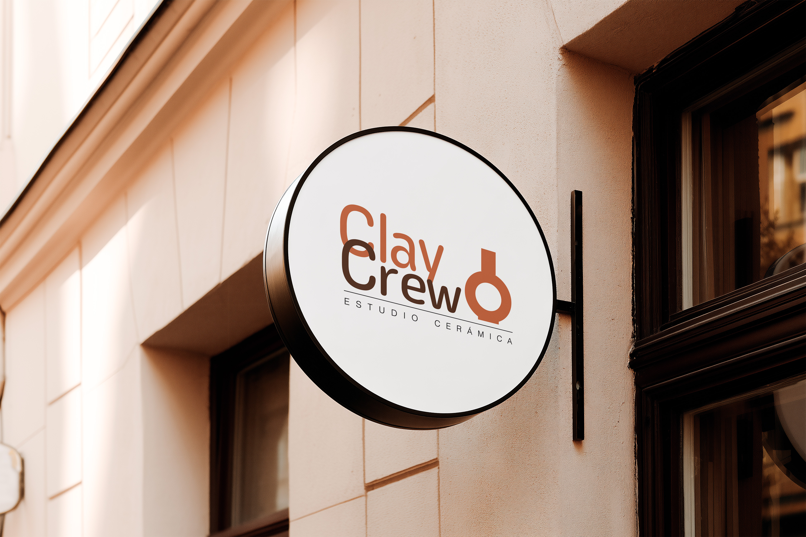
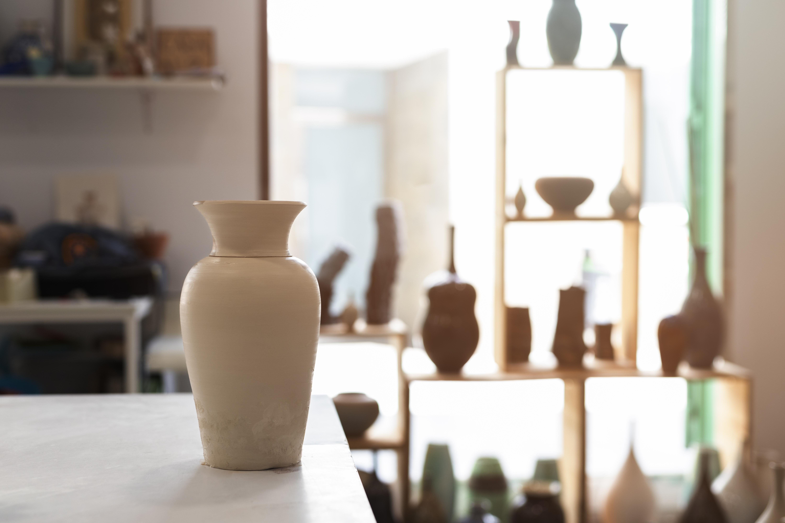
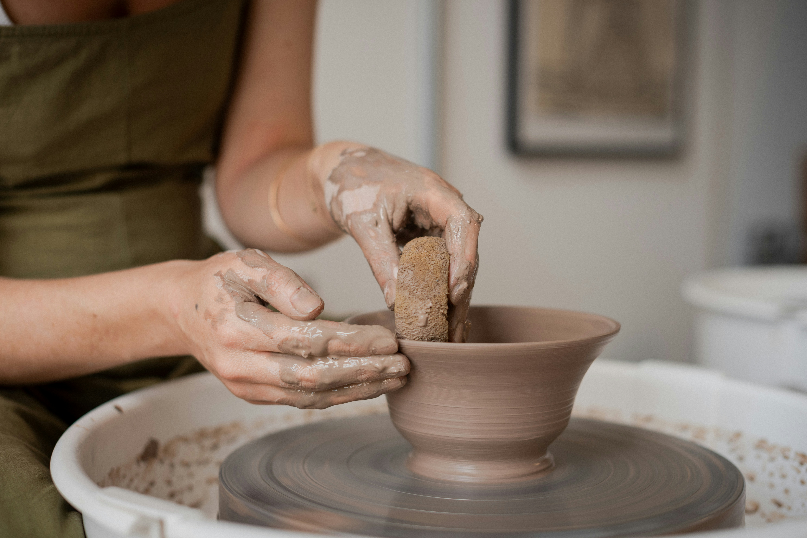
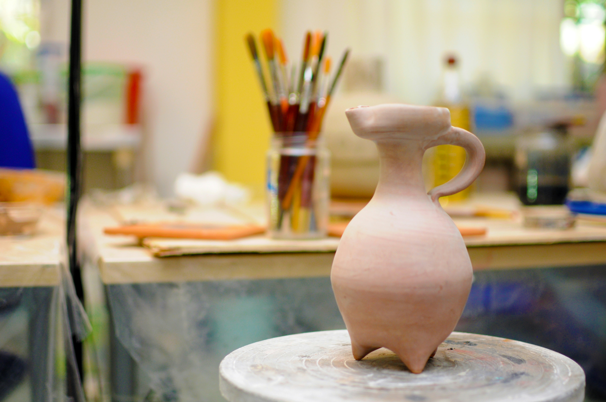

ClayCrew Studio




“Claycrew Estudio: crea, experimenta y conecta.”
“Claycrew Studio: create, experiment and connect.”
Estilo personal
Personal style
En Claycrew Estudio, nuestro estilo visual se inspira en el arte contemporáneo. Nuestras obras utilizan formas orgánicas que no buscan la perfección, sino explorar nuevas formas y generar experiencias únicas. Cada proyecto refleja una identidad moderna y creativa, abierta a la innovación y al descubrimiento.
At Claycrew Studio, our visual style is inspired by contemporary art. Our works utilize organic forms that don't strive for perfection, but rather explore new shapes and generate unique experiences. Each project reflects a modern and creative identity, open to innovation and discovery.
Objetivo
Goal
Nuestro objetivo es crear un espacio que combine aprendizaje y diversión, fomentando la creatividad, la socialización y la experimentación artística en un ambiente dinámico y motivador.
Our Goal It's about creating a space that combines learning and fun, fostering creativity, socialization, and artistic experimentation in a dynamic and motivating environment.
Valores
Values
Este estudio promueve valores como la creatividad, pasión por el arte, la colaboración y la socialización, el aprendizaje en un entorno dinámico y divertido, la conexión con la tradición cerámica, la expresión personal y el desarrollo de oportunidades para los jóvenes.
This study promotes values such as creativity, a passion for art, collaboration and socialization, learning in a dynamic and fun environment, connection with ceramic tradition,personal expression and the development of opportunities for young people.
Horario
Schedule
- Lunes, Miercoles y Viernes de 17:00 a 19:00
- Monday, Wednesday and Friday from 17:00 to 19:00
- Martes y Jueves de 16:30 a 18:30
- Tuesdays and Thursdays from 16:30 to 18:30
- Sábado de 10:00 a 13:00
- Saturday from 10:00 to 13:00
Dónde encontrarnos
Where to find us
- Calle Juan Ramón Jiménez, barrio Altabix, Elche (sede principal)
- Avenida de la Estación, 22 Benalúa, Alicante
- Calle Caballeros, 27, Valencia